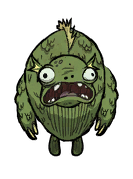
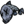
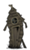
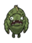

| Merm | |
|  |
|
| Health | 250 |
| Damage | 30 |
| Attack Period | 3 |
| Walking Speed | 3 |
| Running Speed | 8 |
| Special Ability | Eats fruits and vegetables from the ground. |
| Loot |  |
| Spawns from |  |
| DebugSpawn | "merm" |
| “ | What foul sea did that crawl out of? | ” |
| –Woodie | ||
Merms are semi-aggressive Mobs found in Marshes. They live in Rundown Houses. They are dark green in colour and have gills on the sides of their heads and down the neck. These creatures see through bulging eyes and possess a wide gaping mouth. Merms are covered in fishy scales.
They take two blasts from the Ice Staff to be frozen and just one Sleep Dart to be put under. Merms drop raw Fish and Frog Legs when killed, and these remains can often be found in marshes after Merms battle with Tentacles.
Also, Merms eat fruits (like Berries), Vegetables and even Mandrakes, and Crock Pot Recipes. However, they will not eat Seeds or Honey.
A Rundown House
Merms spawn from Rundown Houses, which randomly appear in Marsh Biomes. A Rundown House can house up to 4 Merms, and it respawns a Merm in 4 days after it's killed. During the Day, only 1 Merm per Rundown House is normally outside (unless it gets into combat, then all other Merms come out), and when dusk comes, all Merms go outside, much like Spiders. Merms will attack if the player or any other mob gets too close to their house. Similar to Pigs, when they are provoked, they will attack in groups and will kite.
Merms can be kited, very similarly to Pigs. Thanks to the hostile nature of the marsh biome, Merms are often discovered in pitched battle with Tentacles, Spiders, or both. For this reason, they make for an excellent source of Tentacle Spikes, Tentacle Spots, Monster Meat, Fish, Frog Legs, Spider Glands and Silk: Simply wait for the Merms to finish fighting, then clean up what they leave.
It is not recommended to fight several Merms at once, as they run faster than the player and will kite, like Pigs. Once the player runs some distance apart from a Merm, it will stop being aggressive and will walk back to its house.
To start a battle between Merms and Tentacles, fruits or vegetables can be used as bait for a Merm. Put at least one or two pieces on the ground near a Tentacle or more, near enough to a Rundown House. When a Merm finds the food, it will approach and eat them one by one. There is a good chance the Tentacle(s) will attack the Merm, and then more Merms will come out to fight.
Below is the number of hits it takes with each weapon to kill Merms when playing with characters with a default damage modifier. The Weather Pain is not included due to the random nature of its projectile.
| Weapon |
|
|
| ||||||||||
|---|---|---|---|---|---|---|---|---|---|---|---|---|---|
| No. of hits for  | 59 | 19 | 15 | 10 | 9 | 8 | 6 | 5-9 | 6 or 4 | 5 | 4 | 3 | 1 |
| Mobs | |
| Hostile Monsters | Batilisk • Cave Spider • Clockwork Bishop • Clockwork Rook • Clockwork Knight • Dangling Depth Dweller • Depths Worm • Frog • Guardian Pig • Ghost • Shadow Creature • Hound (Red Hound • Blue Hound) • Killer Bee • Lureplant • MacTusk • Merm • Mosquito • Spider • Spider Warrior • Spitter • Tallbird • Tentacle (Big Tentacle • Baby Tentacle) • Wee MacTusk • (Birchnut Treeguard • Varg |
| Boss Monsters | Ancient Guardian • Deerclops • Spider Queen • Treeguard • (Bearger • Dragonfly • Goose |
| Neutral Animals | Bee • Beefalo • Bunnyman (Beardlord) • Koalefant • Krampus • Pengull • Pig (Werepig) • Rock Lobster • Snurtle • Slurtle • Smallish Tallbird • Splumonkey • (Buzzard • Catcoon • Volt Goat |
| Passive Animals | Baby Beefalo • Butterfly • Chester • Crow • Gobbler • Mandrake • Rabbit (Beardling) • Redbird • Smallbird • Snowbird • (Glommer • Moleworm |
| Other | Abigail • Charlie • Maxwell • Pig King |
{kind=link}
{kind=link}
{kind=link}
{kind=link}
{kind=link}
{kind=link}
{kind=link}
{kind=link}